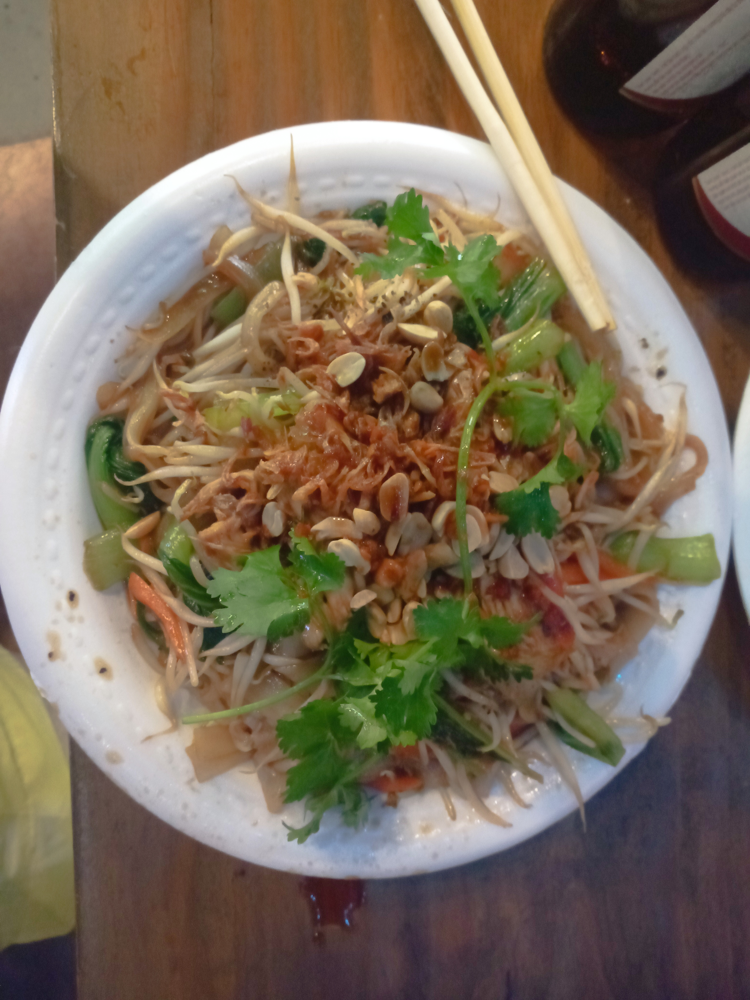
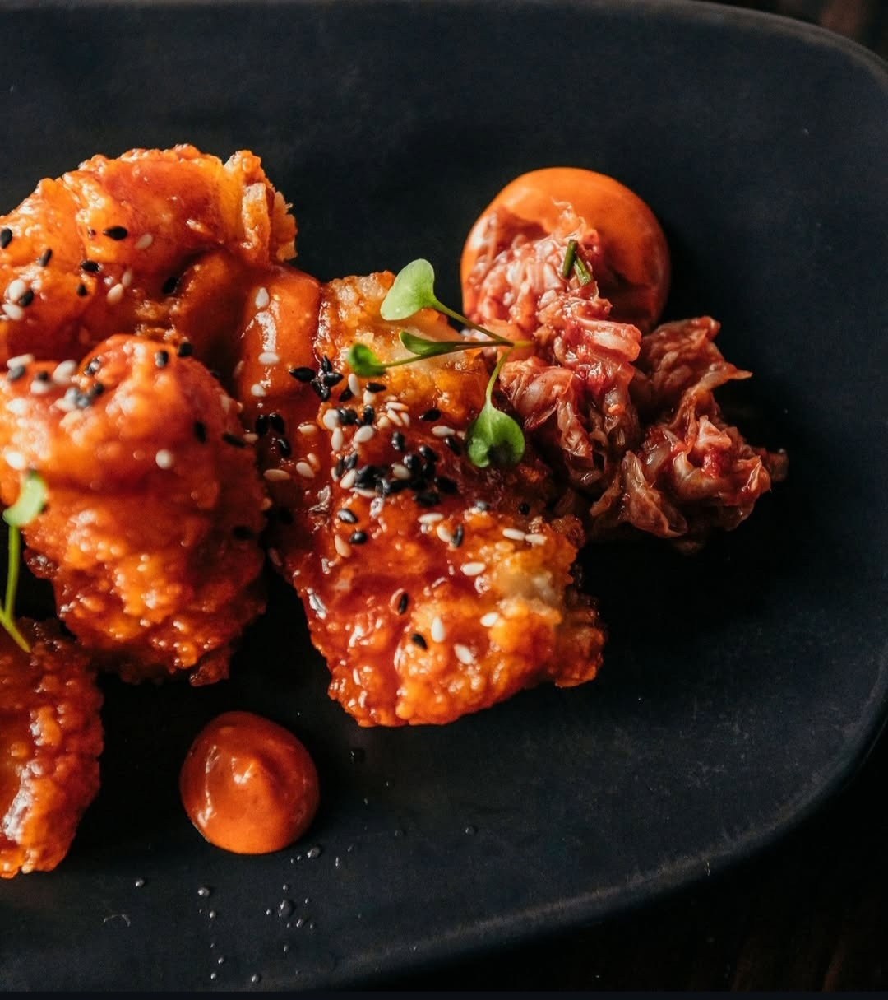
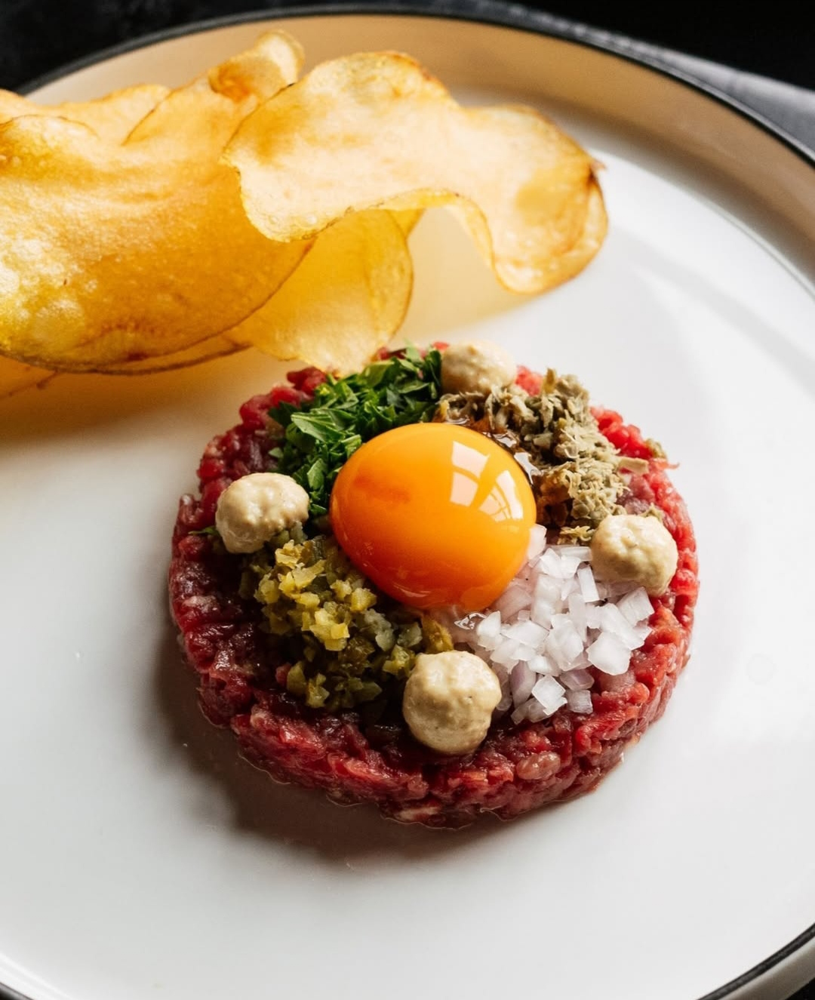
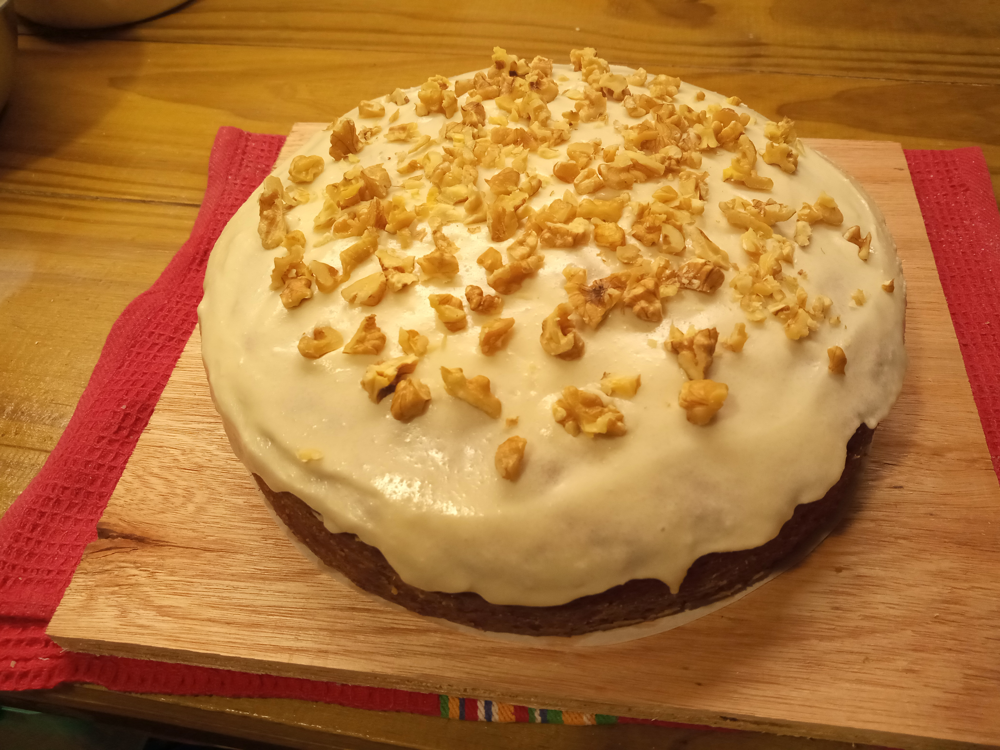

Mi Top 5 platos
(Algunas fotos fueron sacadas por fotógrafos para el book del restaurante y otras son con mi cel)
-
Butter chicken (Imagen pertenece al restaurante "Bombay Palace Queenstown")

-
Pad Thai
 -
Gochujang glazed Calamari
 -
Tartare
 -
Carrot Cake
